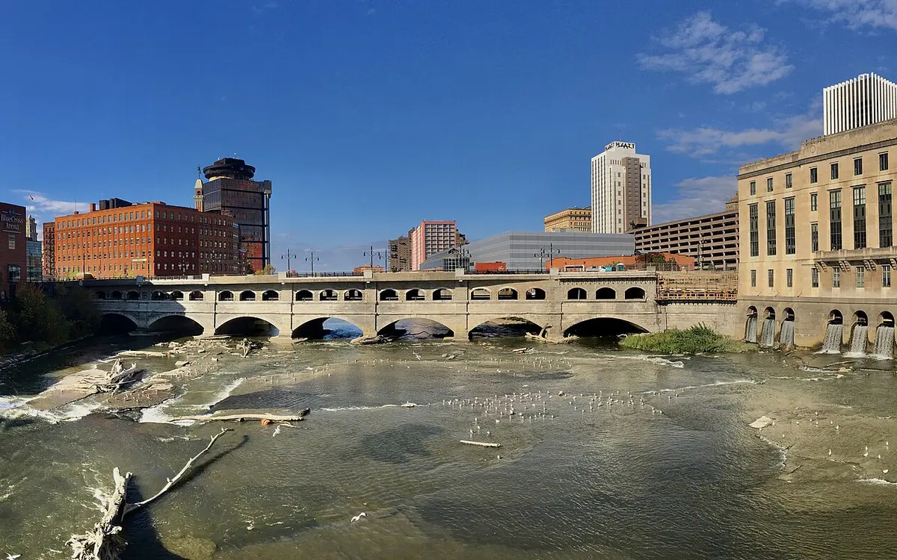

Editorial portfolio guide · LinkedIn
Sustainable585: Issue #2 — Where the Work Begins
A look at how practical sustainability work begins in the 585—quietly, locally, and one committed step at a time.

What the published article covers
Issue #2 focuses on the early, practical stages of sustainability work in greater Rochester: the local projects, institutions, and people doing work that may not yet produce a dramatic headline.
Finding significance in early work
The dispatch treats planning, maintenance, participation, and institutional follow-through as reportable parts of environmental progress. Paul’s editorial role was to show why those quieter steps matter without overstating their scale.
Series continuity
The issue strengthens the Sustainable585 format by keeping the regional boundary and explanatory voice consistent while allowing the specific subjects to change with the news cycle.
Paul’s contribution
Paul independently researched, curated, and wrote the Sustainable585 issue.
About this project
See the assignment, process, and Paul’s contribution.
Paul independently researched, curated, and wrote the Sustainable585 issue.
Related work
Continue through the subject.

Sustainable585: Issue #1 — Where Spring Begins
The first Sustainable585 dispatch: a recurring environmental roundup focused on the greater Rochester region.

Sustainable585: Issue #3 — Biweekly Regional Roundup
Earth Day, Arbor Day, heavy rain, and collective sustainability work across the 585 in early May.

Sustainable585: Issue #4 — Where the Water Rises
A regional roundup tracing sustainability work, local decisions, and changing water conditions across greater Rochester.